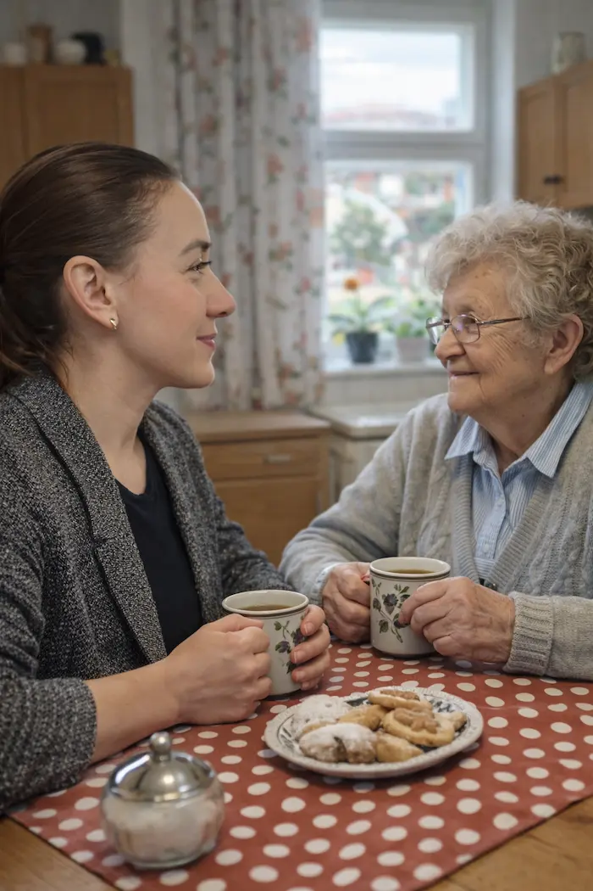

Dovoz nákupu a doprovod seniorů – Mělník
Pomoc seniorům s nákupy, doprovod k lékaři, kontrolní návštěvy • Mělník a okolí
Hledáte pomoc pro seniora na Mělníku? Nabízím dovoz nákupu, doprovod k lékaři nebo na úřady a pravidelné kontrolní návštěvy. Služba je určena seniorům i jejich rodinám, které chtějí zajistit péči o své blízké na dálku.
Působím na Mělníku a v blízkém okolí (Velký Borek, Malý Újezd, Liblice, Hořín, Kly – doprava zdarma). Do vzdálenějších obcí dojíždím za příplatek 8 Kč/km.

Služby pro seniory na Mělníku
Dovoz nákupu pro seniory
Nakoupím potraviny, drogerii nebo jiné zboží podle seznamu a dovezu až ke dveřím. Nákup předám osobně.
Doprovod k lékaři
Doprovodím seniora k lékaři na Mělníku nebo v okolí. Počkám během vyšetření a pomohu s cestou zpět domů.
Doprovod na úřady
Pomohu s návštěvou úřadů – doprovod, pomoc s orientací, případně vyřízení jednoduchých záležitostí.
Kontrolní návštěvy seniorů
Pravidelné návštěvy pro rodiny, které žijí daleko od svých blízkých. Zkontroluju, že je senior v pořádku, a podám zprávu.
Vyzvednutí receptu v lékárně
Vyzvednu léky na recept v lékárně a dovezu je seniorovi domů. Stačí předat potřebné údaje.
Drobné pochůzky
Pomoc s drobnými záležitostmi – vyzvednutí pošty, výběr z bankomatu, podání balíku a další pochůzky.
Pro koho je služba určena
Rodiny seniorů
Žijete daleko od rodičů nebo prarodičů a chcete mít jistotu, že je o ně postaráno? Zajistím pravidelné kontrolní návštěvy a pomohu s nákupy či doprovody.
Senioři
Potřebujete pomoct s nákupem, doprovodem k lékaři nebo na úřad? Jsem tu pro vás – stačí zavolat a domluvíme se.
Lidé po operaci
Zotavujete se a nemůžete nakupovat nebo vyřizovat pochůzky? Pomohu vám v období rekonvalescence.
Ceník služeb pro seniory
| Služba | Cena |
|---|---|
| Nákup a dovoz (do 30 min) | 200 Kč |
| Nákup a dovoz (do 60 min) | 350 Kč |
| Kontrola domácnosti / návštěva | 200 Kč |
| Vyřízení na úřadě | 350 Kč/h |
Doprava v Mělníku zdarma. Mimo Mělník +8 Kč/km. Rozsah služeb vždy po telefonické domluvě.
Kompletní ceníkČasté otázky
Ano, dovoz nákupu pro seniory je jedna z mých hlavních služeb. Nakoupím potraviny, drogerii nebo léky a dovezu je až ke dveřím.
Ano, nabízím doprovod seniorů k lékaři na Mělníku a okolí. Pomohu s transportem, počkám během vyšetření a doprovodím zpět domů.
Ano. Nabízím pravidelné kontrolní návštěvy seniorů pro jejich blízké, kteří žijí daleko. Zkontroluju, že je vše v pořádku, a podám zprávu rodině.
Ano, vyzvednutí receptu v lékárně a dovoz léků patří mezi mé služby. Stačí mi předat potřebné informace.
Dovoz nákupu stojí od 200 Kč podle rozsahu (do 30 minut 200 Kč, do 60 minut 350 Kč). Doprava v Mělníku je zdarma.
Ozvěte se mi
Napište mi nebo zavolejte a domluvíme se na rozsahu služeb.